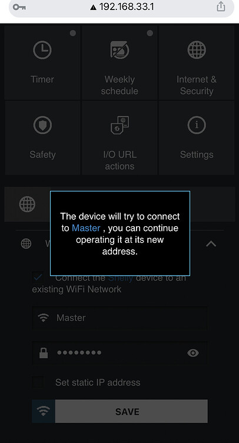

Si comme moi vous ne souhaitez pas/plus utiliser l'app Shelly, ce sujet pourrait vous intéresser.
- Raccorder électriquement le module Shelly
Sur votre téléphone portable:
- Désactiver le 4G
- Dans les paramètres WI-FI,se connecter au "shelly-xxxxxx"
- Ensuite, rendez vous sur votre browser à cette adresse: http://192.168.33.1
- Cliquer sur l'onglet "Internet & Security" ensuite sur "WIFI MODE-CLIENT"
- Cocher la case "connect the shelly device to an existing Wifi Network"
- Renseigner le SSID de votre réseau 2.4Ghz et le mot de passe ➔ SAVE
- Un message apparait connecté (Master) c'est mon réseau 2.4Ghz renseigné plus haut

Sur votre ordinateur:
- Se connecter à votre routeur/box et rechercher l'IP du module que vous venez d'inclure dans les clients Wi-Fi
- Copier l'adresse IP, ouvrir une nouvelle page sur votre browser
- Le sigle rouge indique qu'une mise à jour est disponible sous l'onglet "Firmware Update"
- Libre à vous d'effectuer la mise à jour proposée en cliquant sur "Update Firmware Version"
Le module Shelly redémarrera après la mise à jour